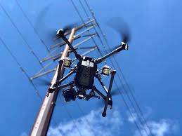

Aerial Inspection

- Domain: Machine Learning
- CategoryResearch Internship project at Aero2Astro
- Project date: 17 May 2021
- Project duration: 6 months
- Details : This was an project during my research intenrship at Aero2Astro. During this internship my main task was
experimenting with various configurations of object detection models like YOLO v4 and PP YOLO. I was giuded by Mr. Ted Soloman and Mr. Hemanth
during this internship.
The project was about the visual inspection of transmission towers.
PS: I will upload all the details once this internship is over!!
Cassava Leaf Disease Detection

- Domain: Machine Learning
- CategoryCollege Project
- Project date: 02 February 2021
- Project Duration: 4 Months
- Details : This was my final year project of MCA. For this project I used dataset available at Kaggle, that included 27000 images of 5 cassava disease infected plants. I trained my model on various architectures such as VGG-16, VGG-19, Mobilenet encompassing some chnages to the models. I also used transfer learning technique for training, which gave me the best results
- Output:
- Github link: https://github.com/yushendye/Cassava_Disease_Detection
- Paper: Applied IJSR Journal
Bitcoin price prediction
- Domain: Machine Learning
- CategoryInternship Project
- Project date: 1 June 2020
- Project Duration: 1.5 Months
- Details : This project was assigned to me during my training cum internship at IBM. During this project I was given a
large dataset of bitcoin that had 2099760 tuples. This dataset had a lot of invalid values as well, that increased the challange of data
cleaning. In this project I used libraries like seaborn for data visualization purpose.
After visualization I realized the patterns in the dataset were needed to be visualized based on the correlation. This lead me to the conclusion that, the linear regression algorithm would give me the desired results.
I decided to go with features such as opening price, highest price lowest price and volume of the bitcoin. As output feature I took the closing price.
Then I used linear regression algorithm from sklearn library for training.
This model gave the testing accuracy of 99% - Github link: https://github.com/yushendye/Cassava_Disease_Detection
MPLAD
- Domain: Android
- CategoryInternship Project
- Project date: 1 June 2020
- Project Duration: 1.5 Months
- Details : This project was assigned to me during my training cum internship at IBM. During this project I was responsible for creating user interface and making a fully working application. MPLAD is initiative by Indian Government for enabling the citizens to communicate the dificulties that they are facing directly to the members of parliament. During this project I learned various components of android framework and various ways of designing attractive user interface. I was working on SQLite database for backend of this application. I also worked on JSON parser while working on this project.
- Output:
- Github link: https://github.com/yushendye/MyMPLAD
Automatic Gate Mangement System

- Domain: IOT
- CategoryCollege Project
- Project date: 12 March 2020
- Project Duration: 3 Months
- Details : This project was originally intended to be used by Konkan Railway Coroporation Limited. This project is based on
IOT and android. In this project I have used arduino UNO board with HC-05 bluetooth module as a hardware component. This system was designed to automate the task of generation of private number (PN) by station master and the gateman.
Working:
1. The station master sees the coming train and uses this application to generate a private number by entering train number and sends it to the gateman
2. Gateman receives the number generated by station master. Now gateman closes the gate and makes sure no vehicle passes the rail track until the train is passed.
Then only after he has closed the gate, now he can generate acknowledge the number sent by station master and generate his own private number.
4. Once the train passes the gate, gateman now opens the gate, and the he enters the time at which train has passed and commits the communication - Output:
- Video Demonstarion:
- Github link: https://github.com/yushendye/Cassava_Disease_Detection
Crop Detection

- Domain: Machine Learning
- CategoryCollege Project
- Project date: 19 February
- Project Duration: 1 month
- Output:
- Details : This was my very first machine learning project. I worked on this project during the "Smart India Hackathon (SIH)
2020 competition along with a team of 6 people. The dataset for this project was not available on the internet, so we had to obtain it using
various web scraping tools such as bing image downloader. We also manually downloaded some images.
Then we worked to develop a machine learning model with tensorflow keras library. The accuracy obtained for this dataset was 91% on validation dataset and 96% on the training dataset.
After creating the model, we worked on the android application. For this we used various libraries like tflite and picaso. During this project I learned playing with permissions in android. I encountered some errors and bugs but over the time I was able to fix them.The project is uploaded on github as well. - Github link: https://github.com/yushendye/Crop_Detection
Faculty Management System

- Domain: Web development
- CategoryCollege Project
- Project date: 1 June 2019
- Project Duration: 5 months
- Output:
- Details : This project is currenly LIVE on the Finolex College Website. Purpose of this project was to develop a system of recording faculty profiles in more efficient way. The older way of keeping faculty information was keeping their resumes on the college server. Faculty management system changes this way completely. It allows faculty of college to have their profiles created on the server by themseleves and then generate the resumes on the go. The faculty has to enter the information such as past teaching experience, publications , conferences etc. This information would be saved at the server end whenever faculty wants to convert his profile into resume, the system would retrive this information and present the same in neat format
Periodic Table

- Domain: Android
- CategoryCollege Project
- Project date: 20 September 2019
- Project Duration: 5 months
- Output:
- Details : In this project I replicated the whole periodic table in the android system. The arrangement of elements was the dificult part in the process but I was able to complete that. After that to add more functionality, I provided facility to click on each element of the table to get detailed information about it. It included information such as the group to which it belongs, atomic weight etc. I also provided facility to hear the pronunciation of the name of the element.